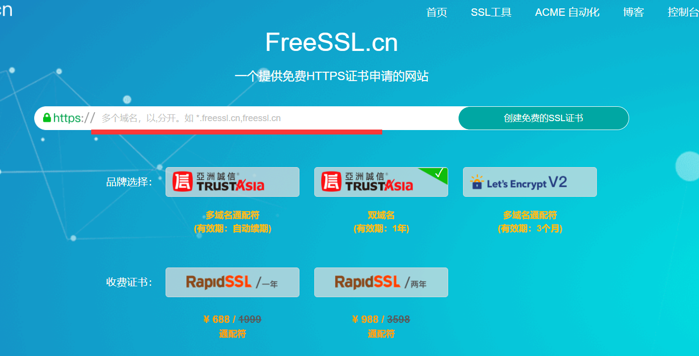
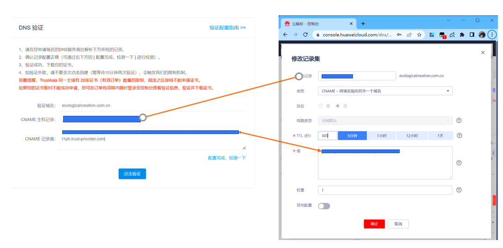
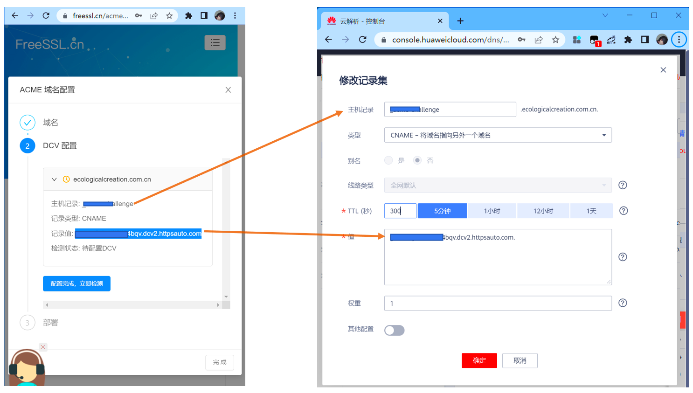
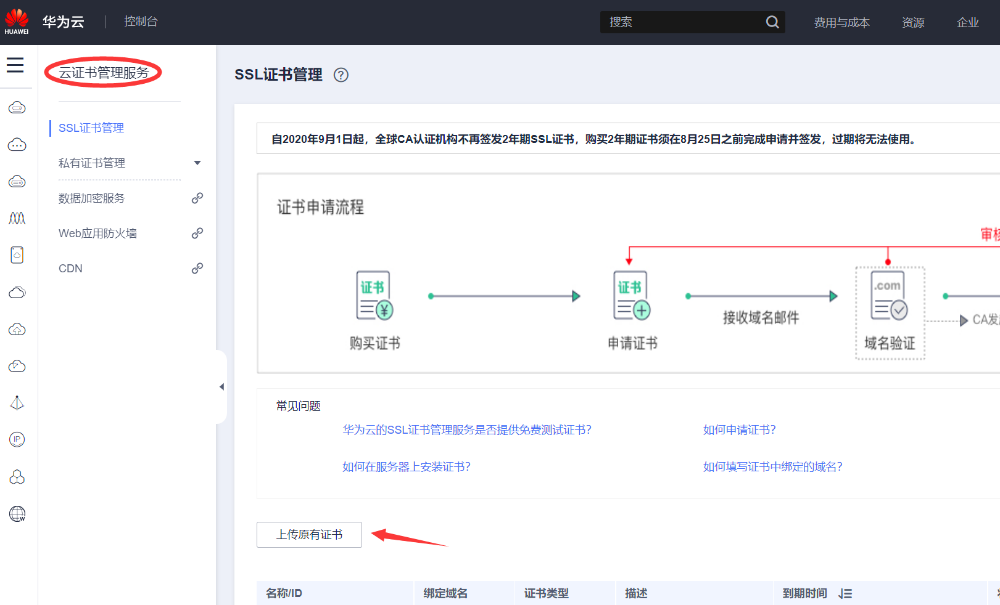
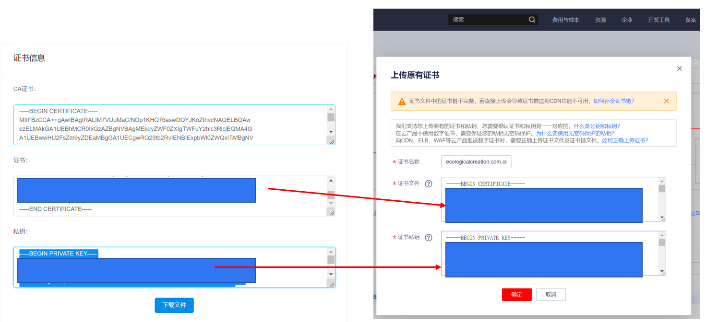
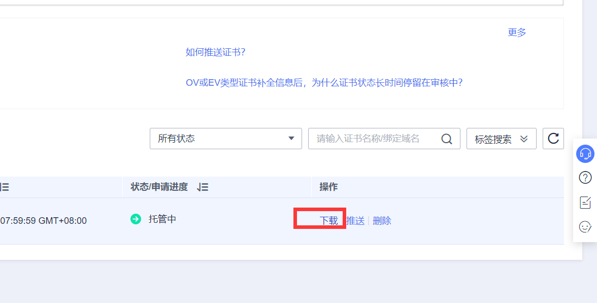
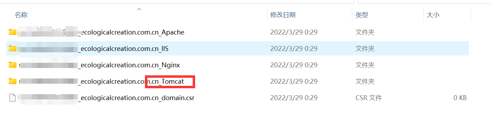
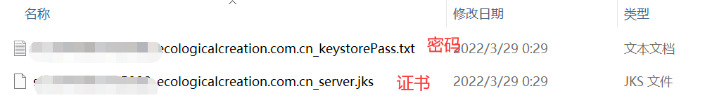
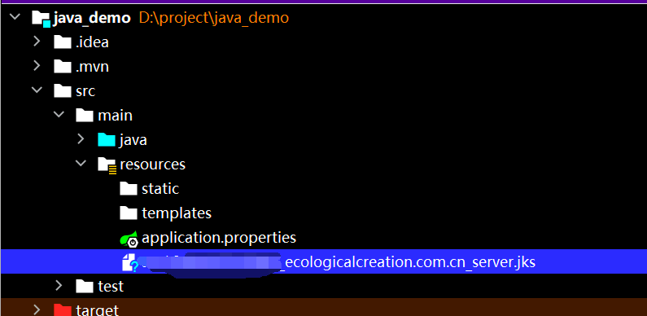

1. 访问网站 https://freessl.cn/
 在横线上填写自己要声请的域名，点击确定
2. 在域名提供商处填写以下字段
如果以华为云为例，就是下面这样，像添加一个普通的域名解析一样，只不过要注意类型这里要换成CNAME。

或者你的界面可能是下面这样，和上面类似

填写完成之后，就可以点击验证，就可以看到证书密钥。如果第一次点击没有反应，可能是还没有解析成功，大概两分钟内就会解析成功。
3. 配置SSL证书
在华为云找到云证书管理服务，上传原有证书

根据FreeSSL所给出的公私钥信息，填写到华为云相应的位置

1. 从云端下载证书到本地 在华为云上传证书的界面，你可以看到自己已经上传的证书，其中有一项为下载。点击下载，可以得到证书压缩包。 
2. 解压证书，选择Tomcat


之后将证书放入Springboot的resource里

3. 在application.properties中加入以下内容
server.port=443
server.ssl.key-store=classpath:******_ecologicalcreation.com.cn_server.jks # 修改为自己的证书
server.ssl.key-store-password=密码 # 在Tomcat那个文件夹里的 **** _keystorePass.txt
server.ssl.key-store-type= JKS
4. 在SpringBoot的入口文件写入如下内容
package com.example.demo;
import org.apache.catalina.Context;
import org.apache.catalina.connector.Connector;
import org.apache.coyote.http11.Http11NioProtocol;
import org.apache.tomcat.util.descriptor.web.SecurityCollection;
import org.apache.tomcat.util.descriptor.web.SecurityConstraint;
import org.springframework.boot.SpringApplication;
import org.springframework.boot.autoconfigure.SpringBootApplication;
import org.springframework.boot.web.embedded.tomcat.TomcatServletWebServerFactory;
import org.springframework.boot.web.servlet.server.ServletWebServerFactory;
import org.springframework.context.annotation.Bean;
@SpringBootApplication
public class DemoApplication {
public static void main(String[] args) {
SpringApplication.run(DemoApplication.class, args);
}
@Bean
public ServletWebServerFactory servletWebServerFactory() {
TomcatServletWebServerFactory factory = new TomcatServletWebServerFactory() {
@Override
protected void postProcessContext(Context context) {
SecurityConstraint securityConstraint = new SecurityConstraint();
securityConstraint.setUserConstraint("CONFIDENTIAL");
SecurityCollection securityCollection = new SecurityCollection();
securityCollection.addPattern("/*");
securityConstraint.addCollection(securityCollection);
context.addConstraint(securityConstraint);
}
};
factory.addAdditionalTomcatConnectors(redirectConnector());
return factory;
}
private Connector redirectConnector() {
Connector connector = new Connector(Http11NioProtocol.class.getName());
connector.setScheme("http");
connector.setPort(80);
connector.setSecure(false);
return connector;
}
}